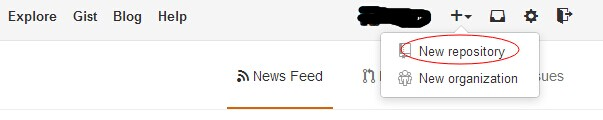
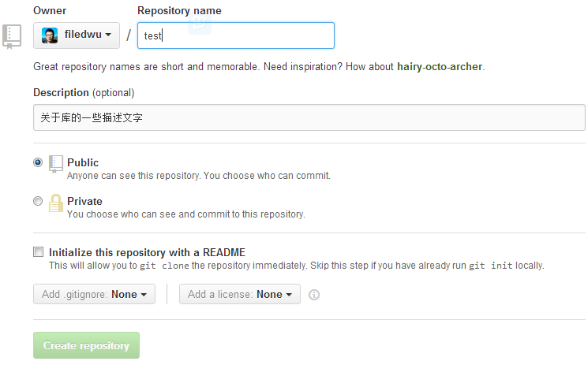
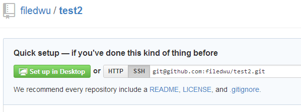
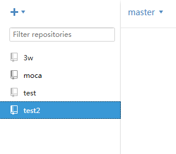
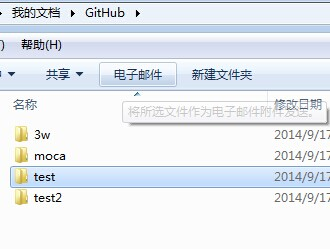
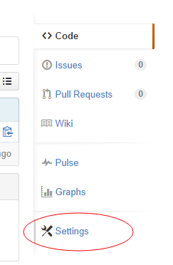
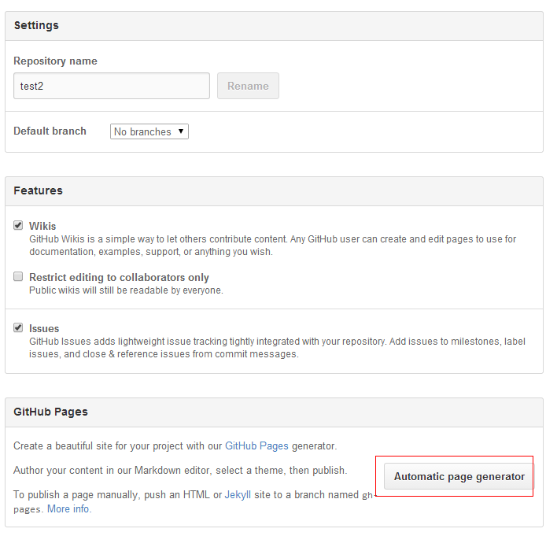
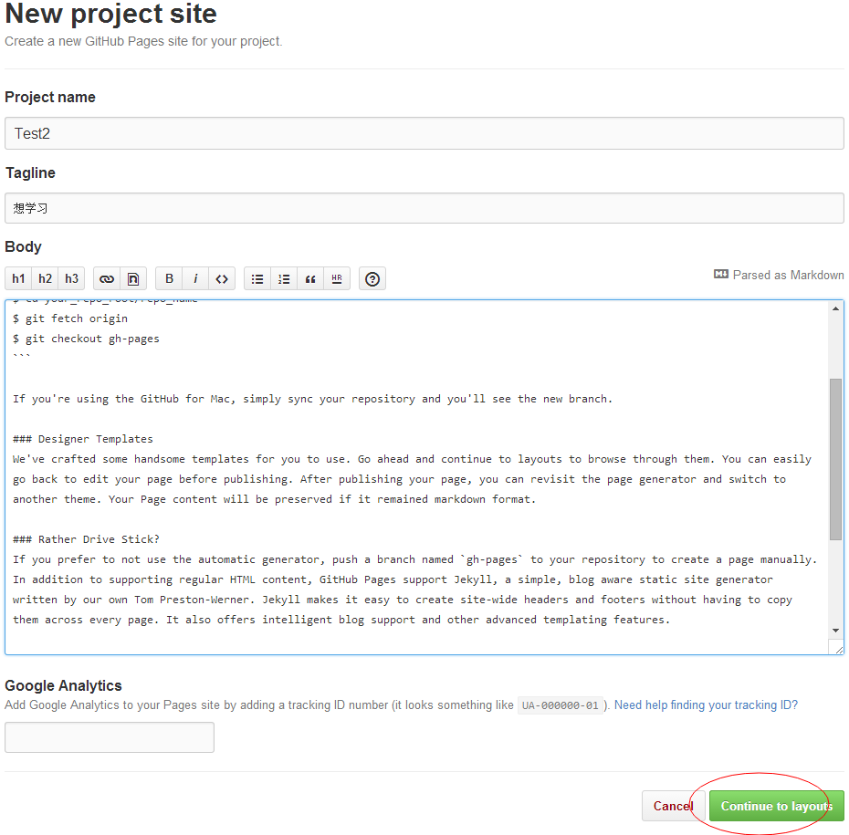
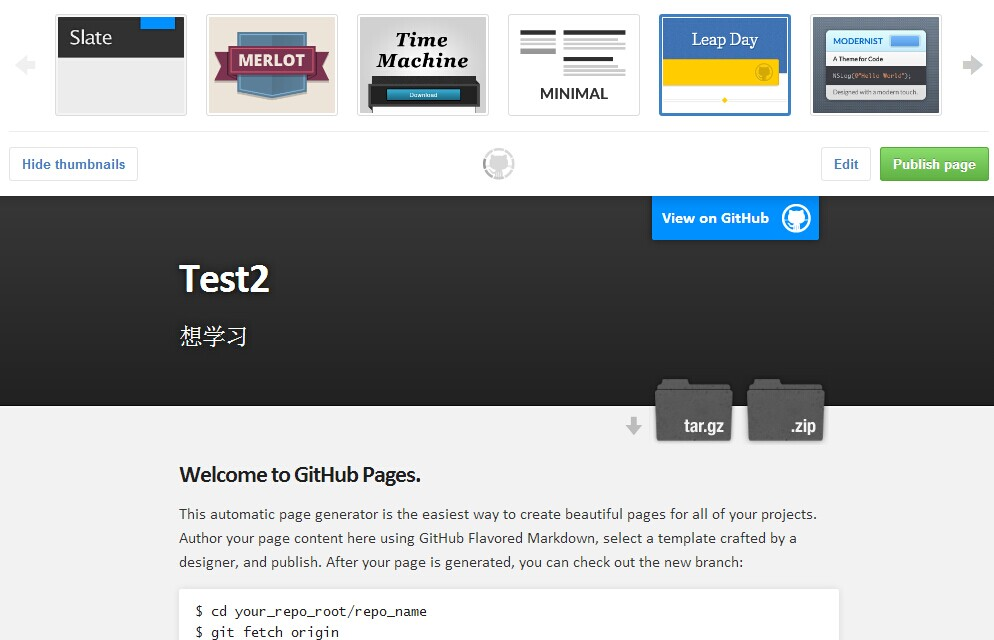
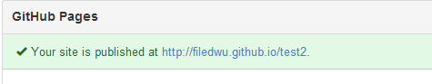

最近一周研究了一下github这个开源的网站，发现github真是一个很强大的开发平台；自我感觉悟性太低，所以只有慢慢消化一下最近学习使用github的使用心得。
因为工作的原因，以前经常会接触github这个网站，但是自己一直没有去深入体验一下，最近花了两天时间研究了一下，搜集各种学习资料，然后自己操作了一遍，感觉使用起来确实很方便，无论是自己开发还是小团队合作开发似乎是一个不错的工具和平台。现在将这几天学习到的东西记录下来，怕日子就了忘记了，可以翻出来review
准备工作
1、进入github.com，下载客户端，根据自己的系统下载github客户端，有windows版和mac版，我使用的是windows版
2、首先注册github帐号，使用邮箱注册就ok了
3、新建一个repository中文翻译，这个词的意思是仓库，个人觉得翻译为"代码库"比较合适


4、建设好代码库之后，直接点击set up in desktop 可以将库中代码下载到本地

5、在本地目录可以自己设置，我选择默认的目录



如何生成git page
选择要生成的页面的 repository，点击页面右侧的Settings

按照要求输入 相应的内容之后 找到 Automatic page generator 这个按钮 点击

进入到如下页面，配置好页面信息以及页面内容，默认的内容都是可以修改掉的，修改完成之后点击 最下方的 continue to layouts 的按钮

进入到选择模版的页面，在页面最上方选择你喜欢的页面模版，下方是你的页面的预览图，选择ok之后 点击publish page是就可以发布页面了

第一次发布需要等待十分钟之后才能看到发布的页面的效果，以后更新会即时同步
如何查看页面，还是点击settings 找到git-page 可以看到如下信息就可找到页面的链接地址


如何使用git shell对代码进行一些必要操作
首先在github新建一个test的项目，最右边的导航里找到 shh地址 git@github.com:filedwu/test.git，记下这个地址
打开 git shell工具
输入cd test 定位到test目录
输入git pull 显示 已经是最新的版本
输入git fetch 将远程分支信息获取到本地
输入git checkout -b local-branche-name origin/gh-pages可以将远程分支映射到本地名为local-branche-name的分支 此分支名可以自定义
然后可以对本地分支 上的文件进行修改 修改之后
输入git commit add index.html 将修改过的文件加入队列 * 可表示整个分支的内容 此行命令输入之后 会显示本地分支修改的部分
输入git commit -m"修改信息" 对分支进行提交 提交之后才能push到服务器
输入git push -u orgin local-branche-name //local-branche-name 为刚刚定义的本地分支名
这样的话 本地文件就传到服务器上的相关分支了
新建一个moca的 repository 点击 set up in desktop
的按钮，会在本地C:\Users\weiweiwu\Documents\GitHub下创建一个moca的文件夹打开git shell 输入cd moca 进入到项目目录
git 分支操作
git branch -a //查看远程分支
git branch //查看本地分支
git branch branch-name //创建分支
git branch -d local-branch-name //删除本地分支
git checkout -b local-branche-name origin/gh-pages //远程分支映射到本地
$ cd your_repo_root/repo_name //定位到项目（repository）目录下
$ git fetch origin //把服务器上的代码checkout 下来
$ git checkout gh-pages //绑定本地分支和服务器分支
$ git add filename //添加到队列 或者使用通配符*
$ git commit -m"info" //提交代码
$ git push -u origin master //将本地代码推送到服务器的master分支